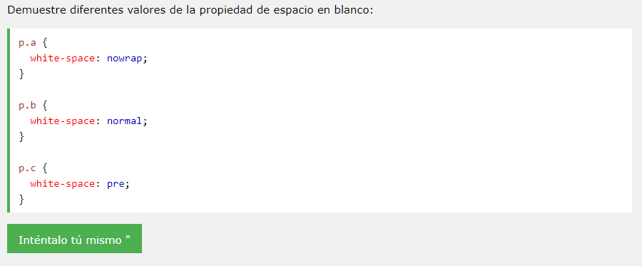

White-spacing es la ayuda de css para los espacios de los textos.
La informática, también llamada computación, es la rama de la ciencia que se encarga de estudiar la administración de métodos, técnicas y procesos con el fin de almacenar, procesar y transmitir información y datos en formato digital.